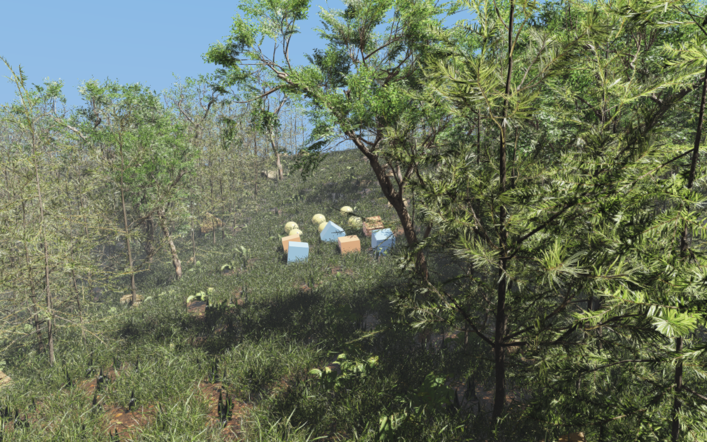

Foliage and forest rendering
Use InstancedVisuals for repeated trees, grass, and ground cover. Rayrai
combines mesh LOD, per-plant visibility checks, compatible color/shadow draw
batching, rooted wind deformation, and two-sided leaf lighting. Vegetation
added this way is visual-only; add RaiSim collision objects separately.
The dense forest example puts these features together on an 80 by 80 metre heightmap with more than 63,000 plants.


Create a vegetation batch
Create one batch for each source mesh and populate it with InstanceSpec
transforms. Bulk addInstances avoids repeated per-instance setup. Place
each plant’s local root at zero before scattering, and use the terrain height
at its position. Imported display-lineup offsets otherwise leave plants
floating or buried on slopes.
viewer.setAsyncMeshLoadingEnabled(true); // Before creating mesh visuals.
auto grass = viewer.addInstancedVisuals(
"grass", raisim::Shape::Mesh, glm::vec3(1.0f),
glm::vec4(1.0f), glm::vec4(1.0f), "/path/to/grass/model.gltf", true);
std::vector<raisin::InstancedVisuals::InstanceSpec> instances;
raisin::InstancedVisuals::InstanceSpec plant;
plant.position = glm::vec3(x, y, terrain->getHeight(x, y));
plant.orientation = glm::vec4(0.0f, 0.0f,
std::sin(yaw * 0.5f), std::cos(yaw * 0.5f));
plant.scale = glm::vec3(1.0f);
instances.push_back(plant); // Repeat for the remaining scatter positions.
grass->addInstances(instances);
grass->setUseMeshColor(true);
grass->setAutomaticMeshLodEnabled(true);
grass->setProjectedLodPolicy(true, 2.0f, 8);
grass->setShadowFoliageLodPolicy(true, 2.5f, 16);
grass->configureFoliageWind(0.0f, 0.5f, 0.09f, 0.7f, 0.2f);
grass->setSortTransparentInstances(false); // Opaque/alpha-masked plants.
grass->setFoliageImpostorPolicy(false);
The quaternion vector uses XYZW order. setUseMeshColor(true) keeps
the imported material/texture colors. The wind arguments are local root
height, tip height, strength, stiffness, and flutter weight. Global wind and
its clock are controlled through render quality or weather settings; see
Weather and atmospherics. Keep transparency sorting for genuinely alpha-blended assets.
Visibility, detail, and shadows
Automatic mesh LOD reduces the triangles in each plant. Projected-size LOD instead reduces the number of drawn instances as plants become small on screen. Neither changes the authored instance array. Eligible high-detail opaque or alpha-masked foliage uses per-instance LOD, so a nearby tree does not force all distant trees in the batch to use the same detail level. Smaller foliage meshes retain their batch-selected LOD while benefiting from per-instance culling and shared draw submission.
Control |
Effect |
|---|---|
|
Generate/select simplified mesh levels; enabled by default. |
|
Opt-in instance thinning below a projected pixel radius, with a maximum
stride. The explicit |
|
Opt-in shadow-only instance thinning and optional maximum shadow distance. It does not change color-pass density. |
|
Shadow casting is enabled by default. Foliage/wind configuration preserves the caller’s choice; the scene light must also have shadows enabled. |
|
Opt-in camera-facing quads for sufficiently small distant foliage. Disabled in the forest example to retain mesh silhouettes. |
|
Opt-in conservative cluster culling for large batches. Inspect
|
The renderer reuses visibility/LOD selections and instance uploads while their inputs remain valid. It caches transformed bounds, shares frustum preparation, and merges compatible foliage draws in color and shadow passes. Materials requiring special ordering or unsupported state retain the fallback paths. These optimizations require no application-side batch collector.
Foliage occlusion uses conservative depth tests with wind-expanded bounds and
alpha-aware coverage. The optional RenderQualitySettings::foliageAlphaDepthPrepass
adds an alpha-tested foliage depth pass; it is disabled by default. Its extra
geometry and texture work can cost more than it saves, so measure it for the
actual scene. Likewise, increasing shadow stride or enabling impostors changes
image quality and should be evaluated separately from renderer optimizations.
Leaf lighting and cutouts
Material::foliage selects a foliage class and enables foliage two-sided
lighting. foliageTransmissionStrength controls thin-leaf direct and indirect
transmission; foliageTransmissionColor is a linear RGB tint of the base
color. High-fidelity indirect lighting also gathers illumination from the
opposite hemisphere, allowing leaves to respond to light behind the surface.
This is separate from glass-style transmissionFactor.
Use authored alpha masking for leaf cards. Color rendering and depth/shadow coverage honor the material’s alpha cutoff. Geometry-only needles with no texture alpha should remain opaque, as in the forest’s pine and fir assets. Normal-map filtering and specular antialiasing stabilize leaf highlights; authored roughness and specular factors still determine their appearance.
pbrEnvironmentLightingTint controls the procedural fallback’s illumination
independently of the visible sky/fog palette. HDR environment maps keep their
captured color. The forest uses subdued neutral fill and strong direct sunlight
with ACES tone mapping to preserve canopy shade and bright sunlit leaves.
The limited-sampler OpenGL path used on macOS supports directional shadow cascades and diffuse environment illumination too. Do not disable cascades solely because the platform uses the compact shaders. See Lighting, shadows, and HDR/IBL for shadow settings and PBR materials for material authoring.
Asynchronous loading and persistent LOD caches
Call setAsyncMeshLoadingEnabled(true) before adding mesh assets. File import,
base-geometry preparation, and instanced LOD generation run on workers;
material/texture resolution and incremental GPU uploads remain on the render
thread. Pending instances are skipped until ready. This does not make RaiSim
physics multithreaded.
Continue rendering while loading. pendingAsyncMeshLoadCount() includes
imports, LOD preparation, and unfinished GPU uploads, making it suitable for a
loading indicator. pollAsyncMeshLoads(maxAssets) advances ready stages on
the render thread with its OpenGL context current. The forest example pauses
physics until loading completes and leaves camera input available. Texture
resolution and uploads can still cause short hitches.
Prepared mesh levels are cached as rayrai_cache_<source-file>.lods beside
the source asset, for example rayrai_cache_model.gltf.lods. A read-only
asset directory falls back to the system temporary cache. Geometry fingerprints
include external buffers and LOD-affecting material settings; other material
and texture properties are taken from the current import. Invalid caches are
ignored and rebuilt. Deleting these optional files trades disk space for a
slower next load without reducing geometry precision or quality.
Set
RAYRAI_ASYNC_LOD_CACHE_DIRto choose a cache directory.Set
RAYRAI_DISABLE_ASYNC_LOD_CACHE=1to benchmark without this cache; unset the variable to restore caching.
Use the forest test and benchmark commands to measure completed frames separately from cold/cached loading. CPU preparation savings do not necessarily produce the same percentage improvement in full-frame FPS; GPU work, shadows, resolution, and camera position also matter.